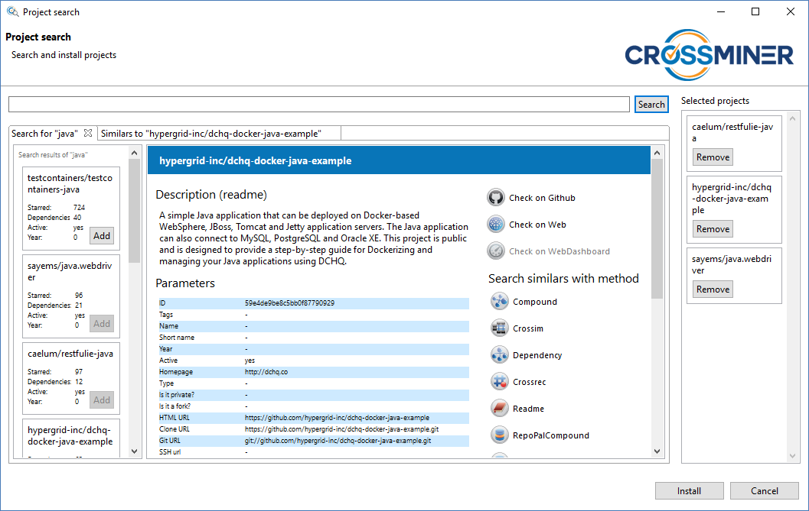

On the left part of this tab you can see the results list. Initially only a few of these results are shown in the list, but by clicking on the Show more button at the bottom some more results can be requested. If no more results can be loaded then the button will no longer be available and a short text will inform you about it. By clicking on these items a couple of informations are shown in the right part of the search tab, like a description or the dependencies. You can navigate to the GitHub repository, to the official website of the project or to the related CROSSMINER Web-based Dashboard site. You can initiate a new search for similar projects to the given project by clicking on the similarity method buttons. These are the Compound, Crossim, Dependency, Crossrec, Readme, RepoPalCompound and RepoPalCompoundV2. Or you can select the given project result to be installed by clicking on the Add button in the result's box. The selected projects are shown on the right side of the dialog in a list. By clicking on these items you can view the details of them such like in the previous case. You can deselect these items by clicking on the Remove button. After you chose the wanted projects to be installed click on the Install button on the bottom of the dialog.

In the install dialog you can set the base path to the location where
you want to install the projects by default. After updating this path all of
the projects destination location is going to be updated. You can see this
property of the projects on the bottom of the dialog, in the project list.
All of the projects can be installed into different locations from the default
by giving them a custom destination path. After setting all of the desired
install paths, you can choose to install all the projects at once by clicking
on the Install all button or you can install them one-by-one manually, by
clicking on the Install buttons of the projects. The installation process can
be canceled by clicking on the Cancel buttons.
Project search dialog - search

Project search dialog - install